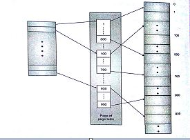

Q. Explain various techniques for structuring page tables.
Following are various techniques for structuring page tables
1. Hierarchical/Multi-level paging
- Most modern computer architectures support larger address spaces.
A single page table itself, corresponding to a process can only take up space in megabytes.
If so then, a large amount of space would be required to accommodate the page tables of all processes contiguously.
- A solution to it is to make it non-contiguous and maintain another table which keeps the record of where in memory is the table stored.
This is called two-level paging. Here the page table is also paged.
- However if this second level memory is also not sufficient for our needs, then we create another level. And so on it goes.
This is called as Hierarchical or Multi-level paging.In two-level page table, the page table is paged and its data is scattered in the memory.
There is another table which contain the entries of page table.
This table is called as directory table. Refer figure below.

- To implement a two-level page structure, the logical address is modified into two parts, one for the Directory table (Outer page table) and other for the inner page table.
- It is as follows:
Here, p1 --> index to the outer page table
p2 --> displacement within the page of the outer page table
d --> page offset.
- This method is not considered appropriate for 64-bit architectures.
- The disadvantage of this is that increases that number of memory accesses.
2. Inverted page table structure
- The page table size in OS is directly proportional to the virtual address space.
The page table has one entry for each page that the process is using.
- In this design method, a real page frame is taken as the page table entry.
- An inverted page table has one entry for each real page(or frame) of memory.
- Each of the entry contains the virtual address of the page stored in the real memory location with information about the process that owns the page.
- Thus, there is only one page table in the system and for each page of physical memory it has only one entry.
- Although this scheme decreases the amount of memory needed to store each page table, the time taken to search in case of a page reference increases.
3. Hashed Page tables
- For handling address spaces larger than 32-bits we use hashed page table where has value is the virtual page number.
- Every entry in the hashed table has a linked list of elements that hash to the same location.
- The linked list element has three fields o The virtual page number o Value of mapped page-frame o Pointer to next element.
- Working: The virtual page number in the virtual address is hashed into the table.
- Now, this virtual page number is compared with field 1 of the first element of the linked list.
- If there is a match, the next page frame (field 2) is used to form the desired physical address.
- If the matching failed, then the next entries in the linked list are searched to find the matching pair.